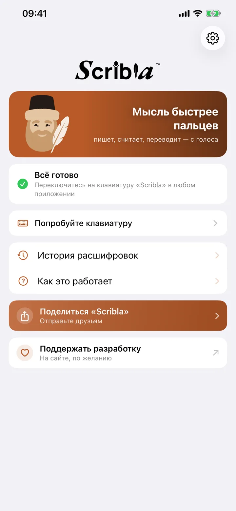
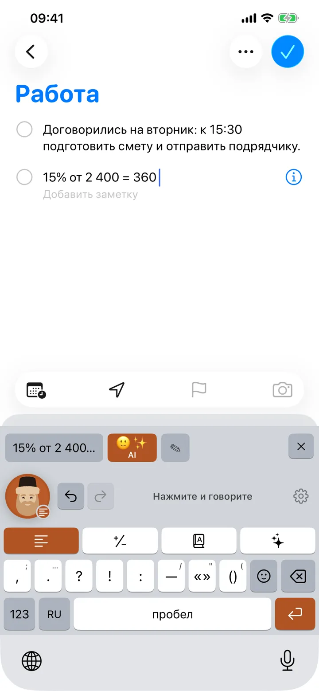
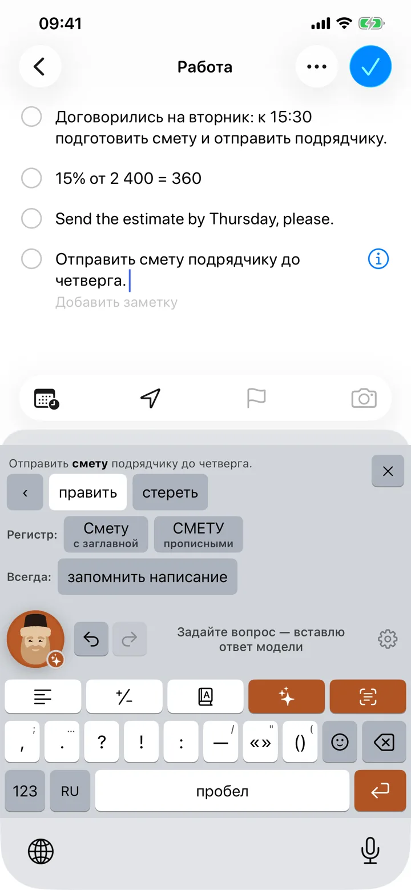

Сказали — текст уже в поле
Диктовка для iPhone и Mac. Ставит знаки, убирает «э-э», считает, переводит и отвечает на вопрос. Бесплатно, звук остаётся на устройстве.

Четыре режима. Режим решает, что встанет в поле
Выбранный режим держится, пока его не сменят: говорить «посчитай» или «переведи» не нужно.
- Текст Сказалину э-э аида доброе утро спасибо большое В полеАида, доброе утро! Спасибо большое.
- Счёт Сказалипятнадцать процентов от двух тысяч четырёхсот В поле360
- Перевод Сказалидокументы получены, ответим до пятницы В полеThe documents have been received, we will reply by Friday.
- AI Сказалиответь что в четверг не получится предложи пятницу В полеК сожалению, в четверг не получится. Предлагаю перенести встречу на пятницу.
Словарь «слышится → пишется» чинит имена и термины раз и навсегда: поправили «эн-ди-эй» один раз — дальше всегда NDA.
Три шага, и первый — один раз
-

Включить клавиатуру
Настройки → Основные → Клавиатура → Клавиатуры → Scribla. Минута, и больше к этому не возвращаться.
-

Нажать на Дьяка
В любом поле ввода: мессенджер, почта, заметки, поиск. Дьяк — кнопка записи на клавиатуре.
-

Говорить
Текст встанет в поле сам. Если распознало не то — полоса правки рядом: слово меняется отдельно, всю фразу переписывать не нужно.
На маке — то же самое, одной клавишей
Значок в строке меню. Держите правый ⌘, говорите — текст встаёт под курсор в любом окне. ⌘ + ⌥ — ответ на сказанное, с нажатым / — перевод.
- Образ подписан и заверен у Apple: открывается двойным щелчком
- Apple Silicon и Intel, macOS 14 и новее
- Диктовка и словарь без интернета; ответ и перевод — модель
SHA-256 образа: 21d193c0d73ece315edb727280fd067b8185700b46a2a1cd44bed7826f274c61


Звук никуда не уходит
Распознавание на устройстве
Речь разбирает сам телефон или мак. Запись не покидает его, и серверу нечего хранить.
Что уходит в режимах с AI
Только текст вопроса — на scribla.io, оттуда к модели. Ни вопрос, ни ответ не сохраняются. Режимы выключаются в настройках.
Без аккаунта и рекламы
Ни регистрации, ни карты, ни трекеров. Вебвизора на сайте тоже нет.
Вопросы
Сколько это стоит?
Сейчас нисколько — открыто всё, и режимы с AI тоже: ответы, поиск в интернете и полировка. Ключ наш, счёт за модель приходит нам; ни подписки, ни регистрации, ни карты. Появится ли что-то платное, решится позже и по делу: сперва надо понять, нужна ли Scribla кому-то, кроме нас самих. Если такой день настанет, скажем заранее, а не в день включения.
Чем это лучше встроенной диктовки?
Встроенная тоже пишет за вами. Scribla сверх этого убирает мычание и повторы, помнит ваш словарь имён и терминов, считает, переводит и отвечает на вопросы — и всё это в поле, где вы стоите, без ухода в другое приложение. Четыре языка распознаются на самом устройстве, в том числе без интернета, а на маке она слышит клавишу в любом окне. И у неё есть Дьяк.
Клавиатура просит полный доступ — это безопасно?
Полный доступ нужен ровно для одного: прочитать распознанный текст из общего хранилища, куда его положило само приложение Scribla. Другого способа доставить текст в клавиатуру iOS не даёт. Сама клавиатура в сеть не выходит и не читает то, что вы печатаете обычными клавишами.
Чем маковая версия отличается от телефонной?
Тем, как её зовут. На телефоне Scribla — клавиатура: переключились на неё и нажали на Дьяка. На маке это приложение в строке меню, и оно слышит правый ⌘ в любом окне, так что переключаться никуда не надо. Распознавание, чистка речи, словарь и режимы с AI — одни и те же. Панелей эмодзи и правки по словам на маке нет: там у вас настоящая клавиатура.
За обновлениями само оно не ходит: новая версия появится здесь.
Нужен ли интернет?
Диктовка, чистка речи, словарь замен и счёт работают на устройстве. Перевод — тоже, если пакет языка скачан; без него он уйдёт в сеть. Интернету остаются курсы валют, ответы AI и полировка текста.
Что-то не работает
Разбор частых поломок — микрофон, полный доступ, пустое поле — собран на странице поддержки. Если там вашего случая нет, напишите: dev@scribla.io.
Что поправить, чего не хватает
Scribla делает небольшая команда, и почти всё в ней появилось из чьей-то жалобы. Пишите не стесняясь — короткое и злое полезнее вежливого и общего.
Если Scribla пригодилась
Приложение бесплатное, и разработку никто не оплачивает. Мы делаем её в свободное время. Перевод — не покупка: он ничего не открывает и ни к чему не обязывает.
Откроется CloudTips — приём переводов Т-Банка. Карту вводите там, на стороне банка; сюда её данные не попадают.